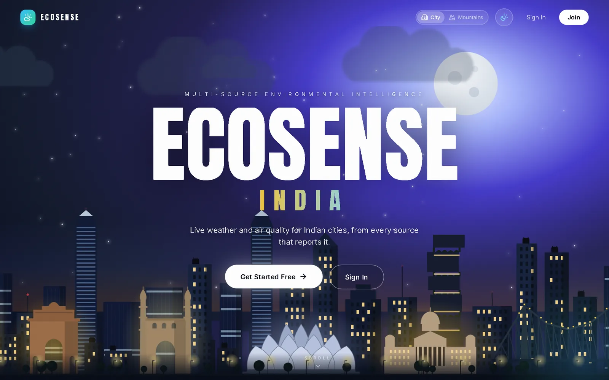
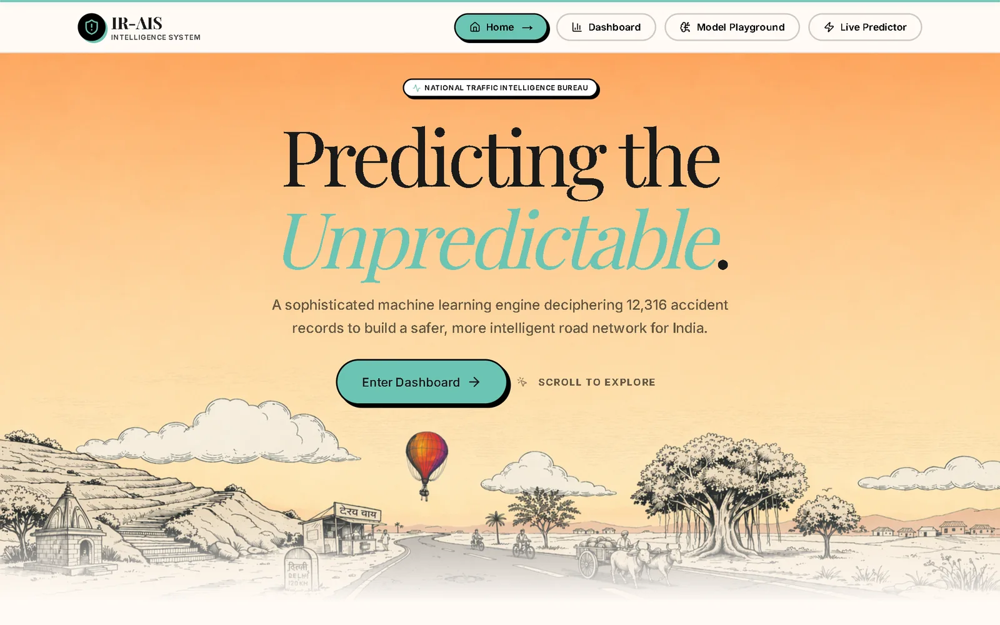
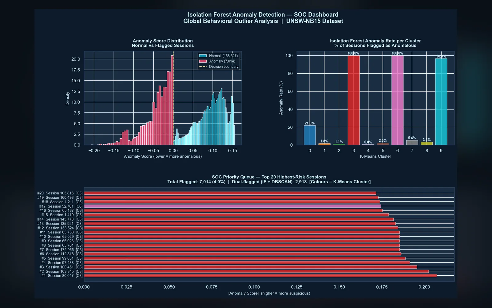
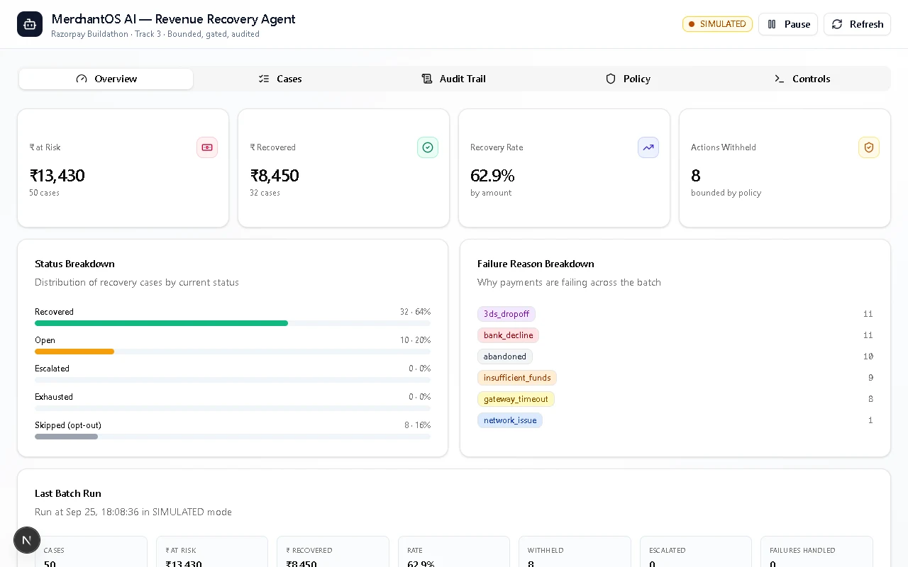

Curious, highly inquisitive, and hands-on. I naturally want to understand how things work beneath the surface. I am not satisfied with simply knowing what something does — I want to know why it works, how it works, and whether there is a better way to build it. I learn by questioning, experimenting, breaking things, rebuilding them, and turning ideas into working projects. When something interests me, I can become deeply involved in it, often going beyond what is required simply because I want to understand the subject properly. This has led me to explore full-stack development, AI/ML, cybersecurity, data systems, software architecture, and game development.
I am naturally a problem solver and systems thinker. I enjoy taking a complicated problem, breaking it into smaller pieces, understanding how those pieces interact, and then building a solution from the ground up. I also enjoy connecting ideas from different fields and using whatever technology is appropriate rather than restricting myself to one stack.
Creativity is another important part of how I work. I enjoy building things that are not just functional but interesting — from environmental intelligence and AI scheduling platforms to cybersecurity systems and a complete narrative game with its own mechanics, story and systems.
I value independence and ownership. I like figuring things out for myself, taking responsibility for the systems I build, documenting what I learn, and continuously improving my work. At the same time, I enjoy collaborative environments where people can challenge ideas, share knowledge, and build something better together.
Most importantly, I am driven by curiosity rather than a checklist of technologies. I want to become the kind of engineer who can face an unfamiliar problem, learn what is necessary, design a solution, and actually build it. I build with AI-assisted development as a core part of my workflow — writing specs, orchestrating coding agents and reviewing what they produce.
In short: I am a builder, a question-asker, a problem solver, and someone who genuinely enjoys learning by creating.

An environmental intelligence platform that unifies weather, AQI and satellite data for any place in India.

India Road Accident Intelligence System: predicts accident severity and segments high-risk conditions from 12,316 records.

An unsupervised framework that surfaces suspicious network behaviour without labelled attacks.
A solo-developed 15–20 hour narrative action-adventure in Unreal Engine 5, built around a time loop.

A policy-bounded agent loop that recovers failed payments end to end, with a full audit trail. Ran a 50-case simulated batch: 62.9% recovered.
A full-stack detective investigation game with five cases, branching interrogations and a server-derived contradiction engine — built with a four-person team.
Conflict-free university timetables for 50+ courses in under 3 seconds, with PDF/Excel export.
A level editor for building engine-ready interior spaces and reusable parametric assets, exported as deterministic JSON.
Step through 59 algorithms and data-structure operations, with animated visuals and the code running line by line.
A personal game library with a collection, a wishlist and filters, backed by a secured REST API (15+ endpoints).
Six-algorithm comparison over 2,805 records: R² 0.883 on price, 81% on insurance status.
Home → Room → Device → Reading hierarchy with authenticated REST APIs and cost analytics.
A merciless troll platformer: 19 levels, two difficulty modes, a solver bot to race, everything generated at runtime. Live on itch.io.
A text-based escape room built in Figma Make: six rooms, a natural-language command parser, a 22-step optimal escape.
A vanilla-JS board game with quiz-gated movement and true-random dice from an external API.
A full-featured board built entirely from prompts: drag-and-drop, roles, activity log and auth — no shallow scaffold.
What I want: opportunities where I can work on real products, difficult engineering problems and technology with practical impact. I am especially interested in full-stack product engineering, AI/ML applications, backend systems, data-driven products, automation and game technology.
Where I want to grow: teams that value curiosity, experimentation, engineering depth and ownership — where I can learn from strong engineers while taking responsibility for meaningful parts of a product.
Companies I aspire to work toward: Google · Microsoft · NVIDIA · OpenAI · Amazon · Apple · Adobe · Epic Games · Unity and other high-impact technology/product companies.